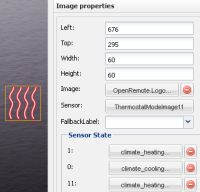

Hi.
I am looking for a method to change an icon/image as a result of the status wof my weather station (Rain/No Rain).
Any ideas of who to do that.
{kind=link}
|
Create a switch with different ON and OFF images. Connect it to Rain and No Rain sensors. |
|
Thanks. It is clear to me that a swich has 2 icons but these is currentrly nothing to switch. |
|
Nothing to switch yet (I think in the future we will be able to do it anyway) so the switch command does nothing. You will use only sensory part of the switch. |
|
Then just use an image and link it to a sensor |
|
Using an image will not work as it only has one image to be used. I have used a switch with no command but just a sensor. |
|
An image by default defines one image. |
|
Thanks Eric. |
|
 In my system I have a ThermostatMode sensor that reads one of the values: "Off", "Heat", "Energy Saving Heat", and a fourth that I do not use yet. The values are retrieved with an http call, that strips off the quotes. (I also tried without stripping) To select the appropriate icon for each of these screens, I have made an additional sensor on this same http call. In that custom sensor I did the following mapping: Name Value 0 Off 1 Heat 11 Energy Save Heat Is it because there are two sensors on one command? EDIT: Got it working with the following mapping Name Value Off Off Heat Heat Energy Save Heat Energy Save Heat |
{kind=link}